Meet the flying squirrels —the little daredevil of the forest!
Flying Squirrel
Flying Squirrel
Flying Squirrel
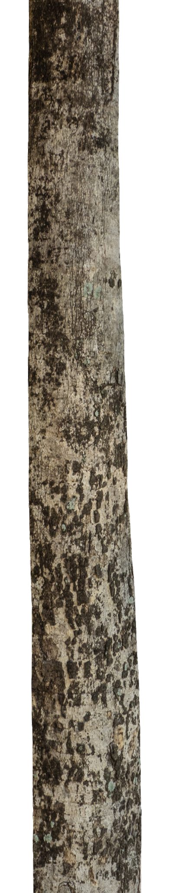
“100% Adorable.”
—Human Beings
Flying squirrels are nocturnal mammals that live in wooded forests.
Scroll down to continue
They can glide as far as 150 feet on average, with recorded distances up to 300 feet.
Scroll down to continue
Their diet is varied, but they especially love acorns, pine nuts, and sunflower seeds.
Scroll down to continue


Gliding Distance
 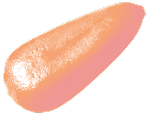
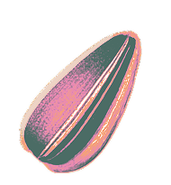
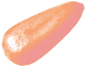
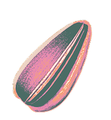
Favorite Food
Gliding
Flying squirrels (scientifically known as Pteromyini or Petauristini) are a tribe of
50 species of
squirrels in the family Sciuridae. Despite their
name, flying squirrels are not capable of flight
like birds or bats; instead, they glide between trees. They are
capable of obtaining lift within the course of these flights, with
flights recorded to 90 metres (300 ft).
The direction and speed of the animal in midair are varied by changing the positions of its limbs, largely controlled by small cartilaginous wrist bones. There is a cartilage projection from the wrist that the squirrel holds upwards during a glide. This specialized cartilage is only present in flying squirrels and not other gliding mammals. Possible origins for the styliform cartilage have been explored, and the data suggests that it is most likely homologous to the carpal structures that can be found in other squirrels.
This cartilage along with the manus forms a wing tip to be used during gliding. After being extended, the wing tip may adjust to various angles, controlling aerodynamic movements. The wrist also changes the tautness of the patagium, a furry parachute-like membrane that stretches from wrist to ankle. It has a fluffy tail that stabilizes in flight. The tail acts as an adjunct airfoil, working as an air brake before landing on a tree trunk.
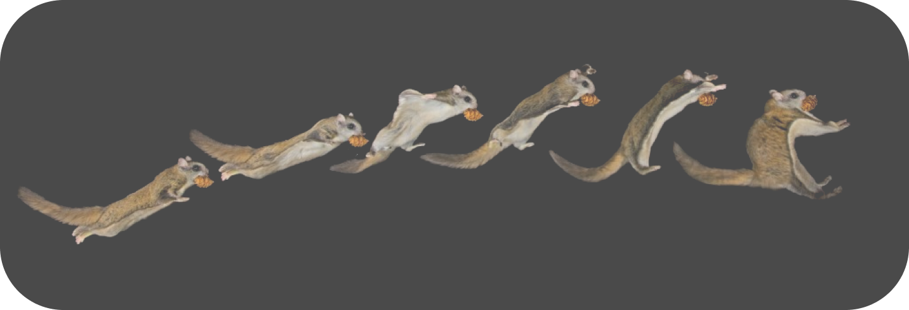Similar gliding animals
The colugos, Petauridae, and Anomaluridae are gliding mammals which are similar to flying squirrels through convergent evolution, although are not particularly close in relation. Like the flying squirrel, they are scansorial mammals that use their patagium to glide, unpowered, to move quickly through their environment.


Colugos
(Flying Lemur)

Petauridae
(Springhare)
Anomaluridae
(Scary-tailed squirrel)
Do you know?
In 2019 it was observed, by chance, that a flying squirrel fluoresced pink under UV light. Subsequent research by biologists at Northland College in Northern Wisconsin found that this is true for all three species of North American flying squirrels. At this time it is unknown what purpose this serves. Non-flying squirrels do not fluoresce under UV light.
Life Cycle
The life expectancy of flying squirrels in the wild is about six years, and flying squirrels can live up to fifteen years in zoos. The mortality rate in young flying squirrels is high because of predators and diseases. Predators of flying squirrels include tree snakes, raccoons, owls, martens, fishers, coyotes, bobcats, and feral cats. In the Pacific Northwest of North America, the northern spotted owl (Strix occidentalis) is a common predator of flying squirrels.
Diet
Flying squirrels can easily forage for food in the night, given their highly developed sense of smell. They harvest fruits, nuts, fungi, and birds' eggs. Many gliders have specialized diets and there is evidence to believe that gliders may be able to take advantage of scattered protein deficient food. Additionally, gliding is a quick form of locomotion and by reducing travel time between patches, they can increase the amount of foraging time.

 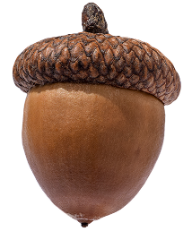
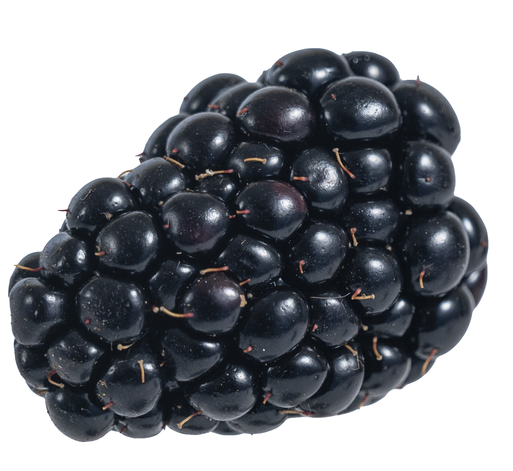
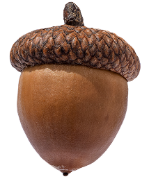
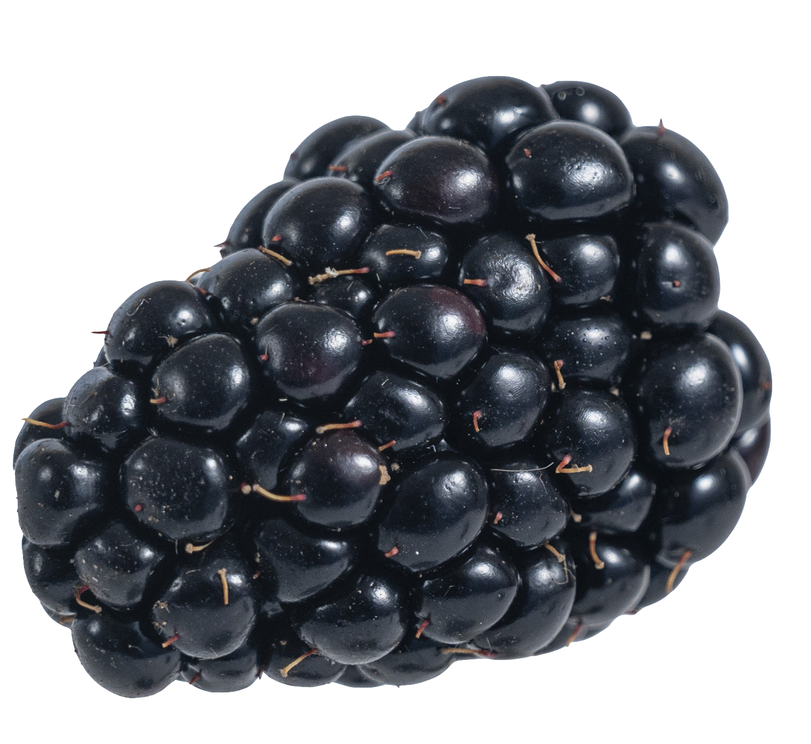
 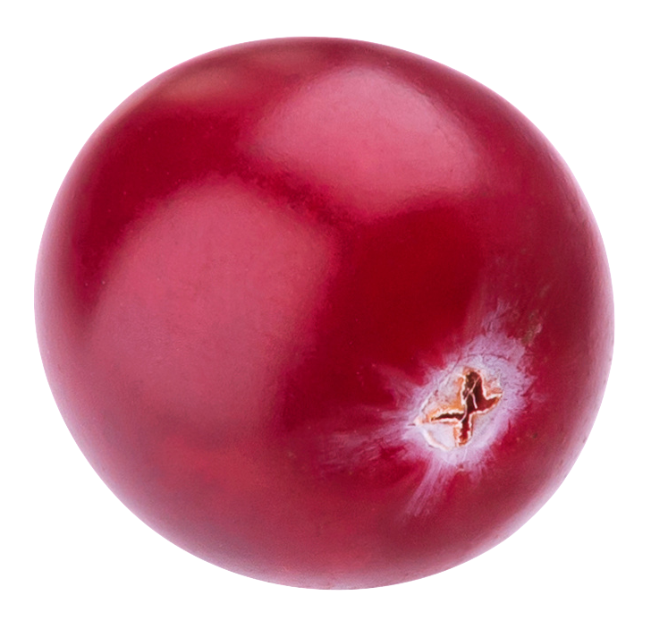
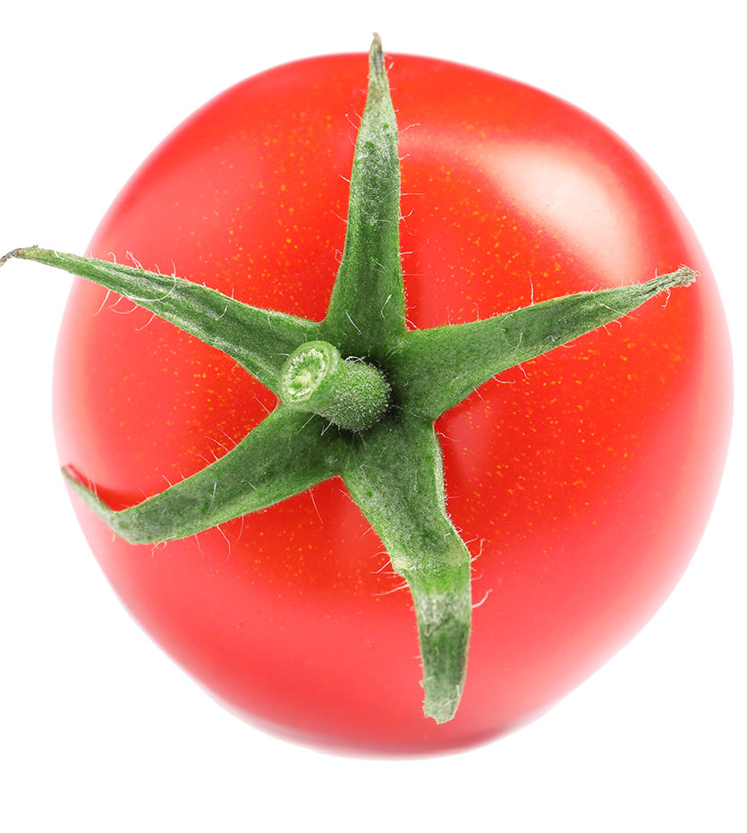
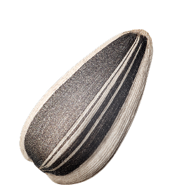
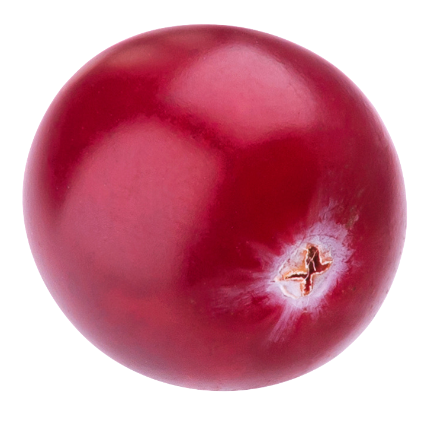
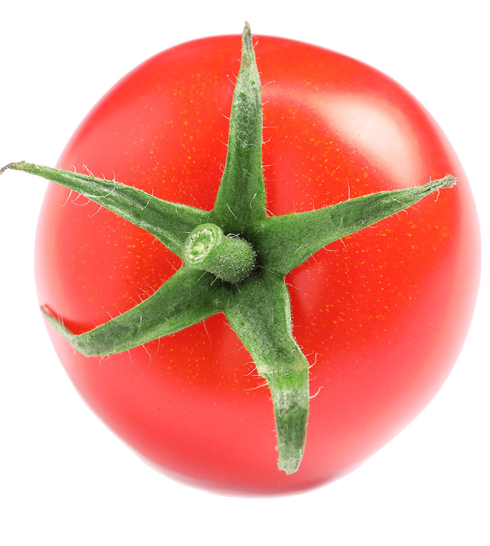
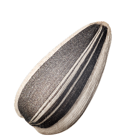

 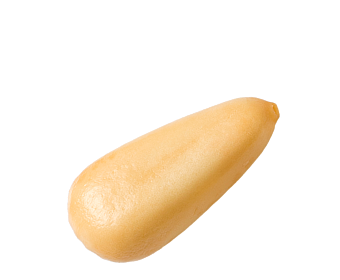
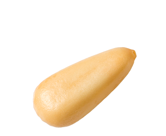
 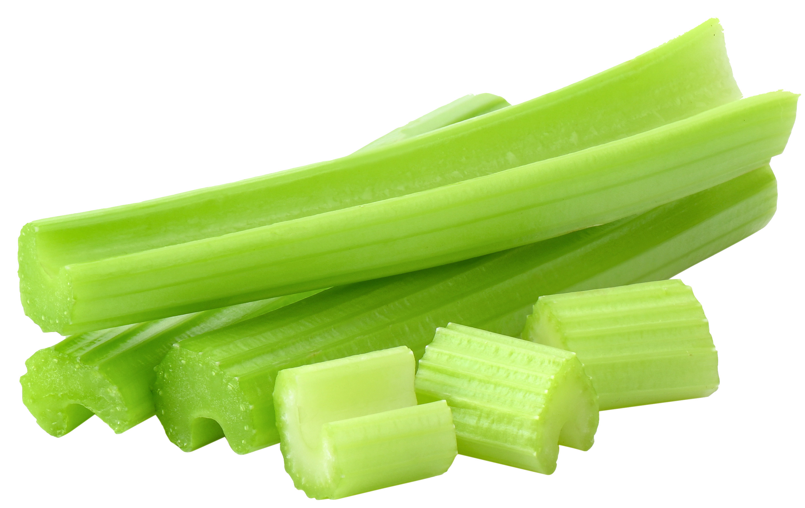
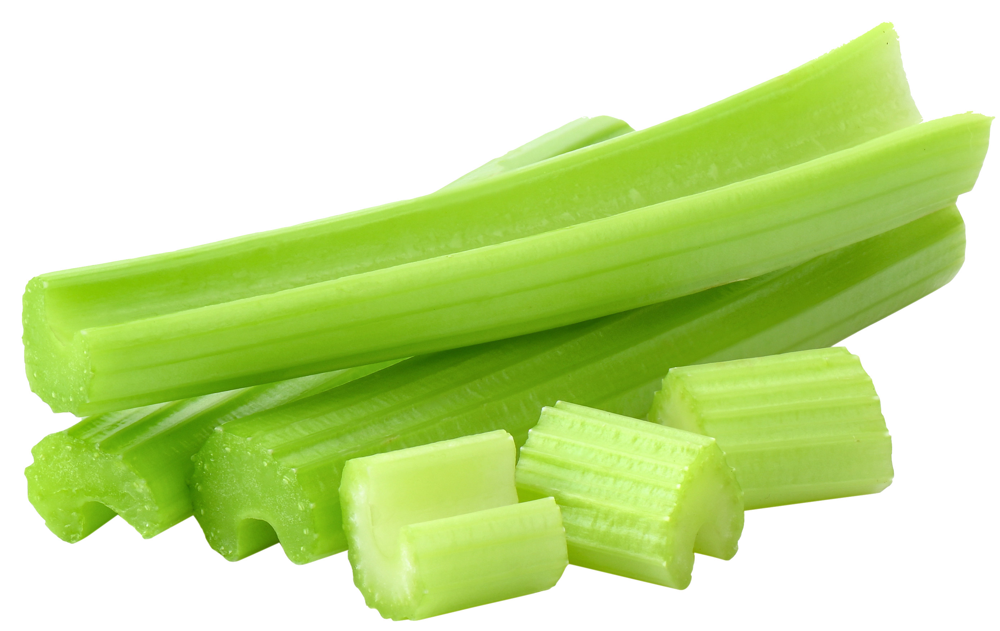
Reproduction
The mating season for flying squirrels is during February and March. When the infants are born, the female squirrels live with them in maternal nest sites. The mothers nurture and protect them until they leave the nest. The males do not participate in nurturing their offspring. At birth, flying squirrels are mostly hairless, apart from their whiskers, and most of their senses are not present. Their internal organs are visible through the skin, and their sex can be signified. By week five, they are almost fully developed. At that point, they can respond to their environment and start to develop a mind of their own. Through the upcoming weeks of their lives, they practice leaping and gliding. After two and a half months, their gliding skills are perfected, they are ready to leave the nest, and they are capable of independent survival.
Evolutionary History
Prior to the 21st century, the evolutionary history of the flying squirrel was frequently debated. This debate was clarified greatly as a result of two molecular studies. These studies found support that flying squirrels originated 18–20 million years ago, are monophyletic, and have a sister relationship with tree squirrels. Due to their close ancestry, the morphological differences between flying squirrels and tree squirrels reveal insight into the formation of the gliding mechanism. Compared to squirrels of similar size, flying squirrels, northern and southern flying squirrels show lengthening in bones of the lumbar vertebrae and forearm, whereas bones of the feet, hands, and distal vertebrae are reduced in length. Such differences in body proportions reveal the flying squirrels' adaptation to minimize wing loading and to increase maneuverability while gliding. The consequence for these differences is that unlike regular squirrels, flying squirrels are not well adapted for quadrupedal locomotion and therefore must rely more heavily on their gliding abilities.
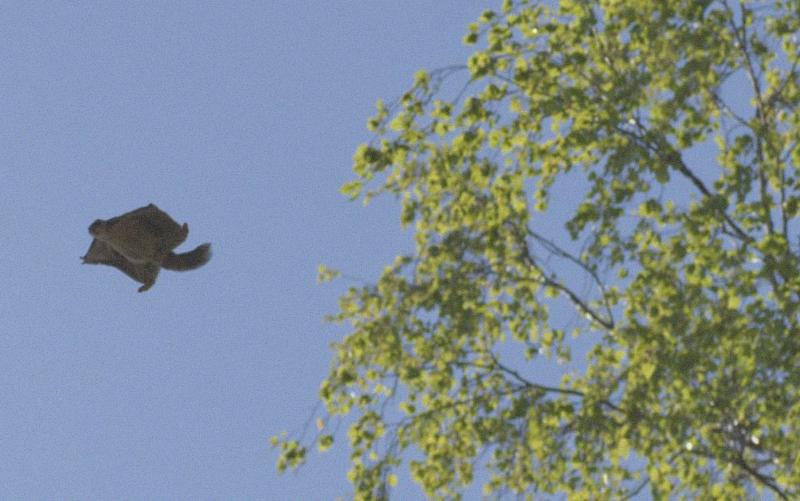Several hypotheses have attempted to explain the evolution of gliding in flying squirrels. One possible explanation is related to energy efficiency and foraging. Gliding is an energetically efficient way to progress from one tree to another while foraging, as opposed to climbing down trees and maneuvering on the ground floor or executing dangerous leaps in the air. By gliding at high speeds, flying squirrels can rummage through a greater area of forest more quickly than tree squirrels. Flying squirrels can glide long distances by increasing their aerial speed and increasing their lift.
Other hypotheses state that the mechanism evolved to avoid nearby predators and prevent injuries. If a dangerous situation arises on a specific tree, flying squirrels can glide to another, and thereby typically escape the previous danger. Furthermore, take-off and landing procedures during leaps, implemented for safety purposes, may explain the gliding mechanism. While leaps at high speeds are important to escape danger, the high-force impact of landing on a new tree could be detrimental to a squirrel's health. Yet the gliding mechanism of flying squirrels involves structures and techniques during flight that allow for great stability and control. If a leap is miscalculated, a flying squirrel may easily steer back onto the original course by using its gliding ability. A flying squirrel also creates a large glide angle when approaching its target tree, decreasing its velocity due to an increase in air resistance and allowing all four limbs to absorb the impact of the target.